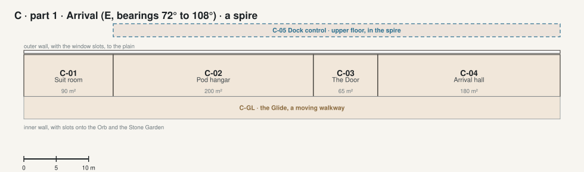

The Crown · part 1 · Arrival E, bearings 72° to 108°, a spire

| Code | Room | What it is for | Also | Size | Two of a kind |
|---|---|---|---|---|---|
| C-01 | Suit room | Suits and the airlock with a dust room, for going out onto the hull or the plain. | 90 m² | L5-20 Suit room | |
| C-02 | Pod hangar | The pods dock here, through a door in the outer wall. | 200 m² | ||
| C-03 | The Door | The front door of the house, from the hangar. | 65 m² | ||
| C-04 | Arrival hall | Where everyone arrives: 9 m tall, an olive bench, the portal to the Orb, the spires and the Pentagon. | Where visitors are welcomed. | 180 m² | |
| C-05 | Dock control | Upstairs in the Arrival spire: watches the pods dock. | 450 m² · upper floor | L3-21 Flight control |